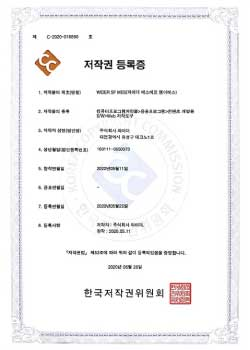
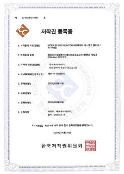
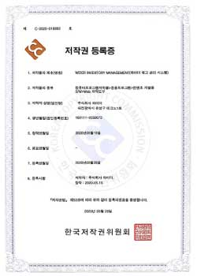
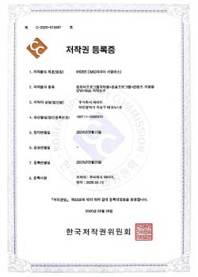

스마트공장 인증서
스마트공장 인증서
-

SF MES
MES(Manufacturing Execution System)은 제조실행시스템으로써 원자재 입고부터 생산과정, 완제품 입고 및 출고 전반적인 생산과정을 모두 관리할 수 있도록 제작된 프로그램.
스마트팩토리 신규 구축에 가장 중요한 시스템. -

SF MES 모니터링
스마트팩토리 구축 프로그램 MES 운영시 원자재입고, 재고현황, 생산현황, 완제품입고 및 출고와 같은 부분들을 모니터링 구현 시스템.
-

재고관리 시스템
스마트팩토리 외에도 상품의 재고가 있는 모든 업종에서 적용할 수 있는 재고 관리 프로그램.
모바일앱에서 사용 가능하며, 안드로이드 및 Mac 모두 호환 가능. -

CMS
Content Management System은 홈페이지 개발자가 아니더라도 어느 누구나 홈페이지를 구축할 수 있도록 제작된 프로그램.
한국 기업 초점으로 구현되어 시중에 있는 홈페이지 구축 프로그램과 차이가 있음.